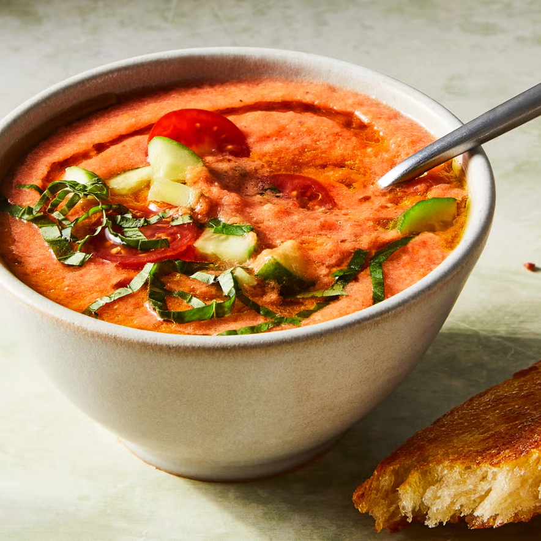

Gazpacho

Ingredients
- 2 lb. tomatoes, quartered
- 2 Persian cucumbers, peeled and chopped, plus more chopped for serving
- 1/2 red bell pepper, chopped
- 1 clove garlic, roughly chopped
- 2 Tbsp. red wine vinegar or sherry vinegar
- 1/2 cup water
- 1/3 cup extra-virgin olive oil, plus more for pan and garnish
- Kosher salt
- Freshly ground black pepper
- 2 thick slices country bread
- 6 cherry tomatoes, halved, for topping (optional)
- 2 Tbsp. thinly sliced basil
Instructions
- Combine tomatoes, cucumbers, pepper, garlic, vinegar, and water in the bowl of a food processor or blender. Blend until smooth, then add oil and blend to combine. Taste and season with salt, pepper, and more vinegar if needed. Cover and refrigerate until chilled.
- Meanwhile, in a large skillet over medium heat, add enough oil to coat the bottom of the pan. Add bread and cook until golden and crisp on the bottom, 1-2 minutes. Flip bread to other side and cook until crisp, 1-2 minutes more. Remove from pan and let cool.
- To serve, divide soup among bowls and top with cucumber, tomatoes (if using), basil, and a drizzle of oil.
Servings
6-8 servings
Back to Recipes